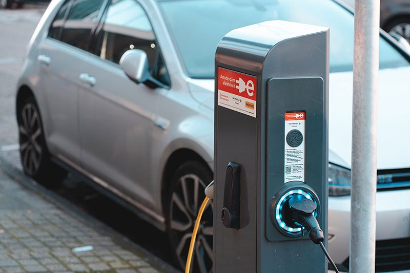

Artikel
/Mobil Listrik
08/09/2024
Mobil Listrik
Jenis mobil listrik terus berubah berkembang memberikan ragam pilihan bagi calon pengguna. Saat ini dunia sudah semakin akrab dengan istilah jenis-jenis mobil listrik seperti BEV, HEV, PHEV dan FCEV. Cara ataupun prinsip kerja masing-masing jenis mobil listrik itu berbeda-beda. Artikel ini akan membahas secara singkat definisi atau pengertian dari mobil listrik.
Pengertian atau definisi mobil listrik adalah kendaraan yang sepenuhnya atau sebagiannya digerakkan oleh motor menggunakan listrik di baterai. Baterainya dapat diisi ulang. Mobil listrik praktis pertama diproduksi tahun 1880-an. Mobil ini sangat populer di akhir abad ke-19 dan awal abad ke-20. Perkembangan serta inovasi mesin pembakaran internal (internal combustion engine–ICE) disusul produksi massal kendaraan bensin yang lebih murah menyebabkan penurunan penggunaan mobil listrik.
Perkembangan teknologi sistem penyimpanan energi khususnya teknologi baterai, membuat penggunaan kendaraan listrik menjadi populer kembali belakangan ini. Electro mobility (E-mobility) adalah istilah umum untuk pengembangan transportasi bertenaga listrik untuk beralih dari penggunaan bahan bakar fosil, dan untuk mengurangi emisi gas karbon. Keunggulan utama e-mobility ini adalah efisiensi yang sangat tinggi dengan emisi karbon rendah.